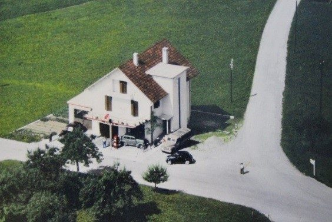
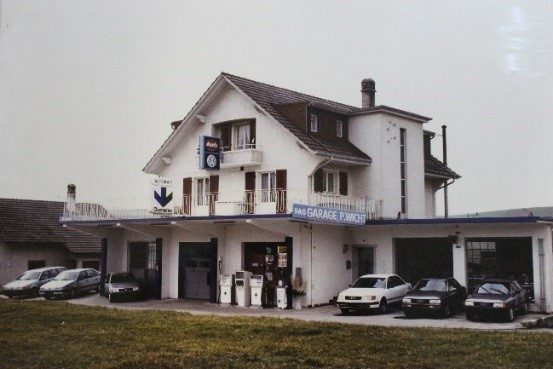
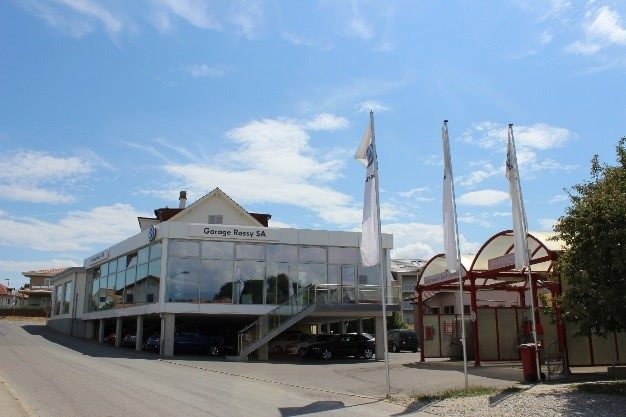
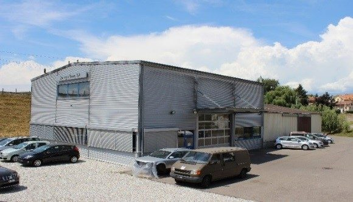
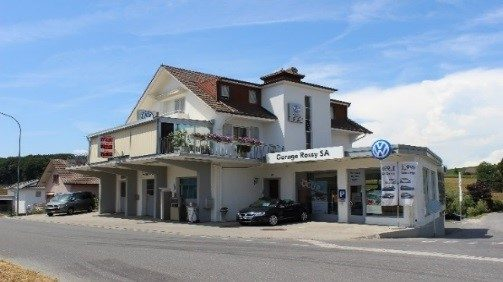
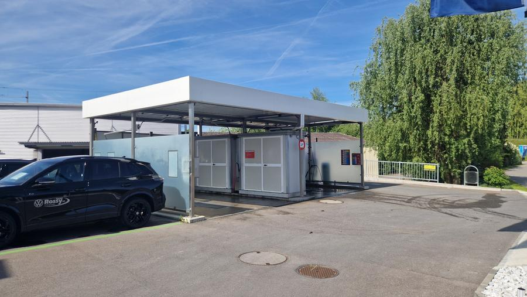

Garage Rossy SA représente fièrement les marques Volkswagen et VW Utilitaires. Avec l'agrandissement de 2023 — nouveau showroom, nouveaux bureaux et station de lavage Hydrowash à 2 pistes — le garage continue de se moderniser au service de sa clientèle fidèle.